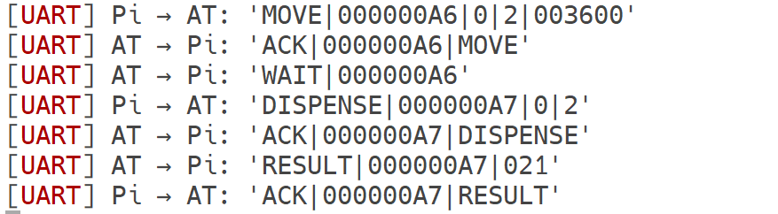

2026.07 – 08 · 팀 3인 · 제24회 임베디드SW경진대회 출품
약SLOT
블리스터 포장 기반 복약 지원 장치
1. 프로젝트 개요
- 프로젝트명
- 약SLOT (블리스터 포장 기반 복약 지원 장치)
- 수행기간
- 2026.07 ~ 2026.08
- 수행인원
- 3인 (Raspberry Pi·통합 1, UART 통신 1, 구동부 1)
- 담당역할
- Raspberry Pi–ATmega128A UART 통신 프로토콜 설계 및 ATmega128A 측 구현, 통합 시험
- 사용 기술
- C, ATmega128A, UART(9600bps 8N1), Raspberry Pi 4, 스테핑 모터(28BYJ-48), 서보(MG996R), IR 센서(SEN0503)
- 담당 코드
uart.c,protocol.c,fsm.c,systick.c및 헤더 (atmega128/FINAL/ATMEGA128A_INTEGRATION/)- 링크
- GitHub (atme 브랜치) / 시연 영상
2. 개발 배경 및 목적
- 다제 복용 고령자의 복용 시간·수량 혼동으로 인한 누락 및 중복 복용 위험
- 기존 자동 복약기의 약 재포장 필요 (약을 꺼내 전용 칸·카트리지에 재투입, 약명·유효기간 정보 소실)
- 제조사 블리스터 포장을 그대로 사용하는 복약 지원 장치 개발
3. 개발 목표
- 2행 × 5열 블리스터의 대상 칸으로 X/Y 이동
- 사용자 승인 후 1정 압출 및 IR 센서 기반 배출 확인
- 복약 결과 기록 (성공, 미감지, 미복약)
- 통신 오류·재전송 상황에서도 중복 배출 없는 동작
4. 시스템 구성
- Raspberry Pi 4: 복약 일정·기록(웹, SQLite), 터치 LCD, 음성 안내, UART 명령 송신
- ATmega128A: UART 수신·명령 해석·상태 머신, 모터·서보·센서 구동
- 기구부: X/Y 스테핑 모터(칸 이동), 서보(1정 압출), IR 센서(배출 확인)
- 연결: Raspberry Pi ↔ ATmega128A UART (9600bps 8N1)
5. 동작 흐름
- 복약 시간 도달 시 Pi의 음성 안내 및
MOVE송신 - ATmega의
ACK응답 및 대상 칸 이동, 도착 시WAIT송신 - LCD 배출 버튼 활성화, 사용자 승인 시
DISPENSE송신 - ATmega의
ACK응답, 서보 압출 및 IR 센서 배출 확인 후RESULT송신 - Pi의 결과 저장 및
ACK송신, 사이클 종료
Pi → AT : MOVE|00000001|0|0|003600 0행 0열, 허용시간 3600초 AT → Pi : ACK|00000001|MOVE 접수, 이동 시작 AT → Pi : WAIT|00000001 도착, 배출 대기 Pi → AT : DISPENSE|00000002|0|0 사용자 승인 AT → Pi : ACK|00000002|DISPENSE 접수, 압출 시작 AT → Pi : RESULT|00000002|001 0행 0열, 배출 확인 Pi → AT : ACK|00000002|RESULT 결과 수신 확인
6. 주요 구현 내용
6.1 UART 통신 프로토콜 설계
- ASCII 문자열 기반, 필드 구분자
|, LF 종료, 최대 64바이트 - 물리 동작 명령(
MOVE,DISPENSE)별 8자리 16진수 요청번호(Request ID) 부여
| 방향 | 메시지 | 내용 |
|---|---|---|
| Pi → AT | MOVE|ID|X|Y|T | 대상 칸 이동 (X 0~1, Y 0~4, 허용시간 1~999999초) |
| Pi → AT | DISPENSE|ID|X|Y | 1정 배출 |
| Pi → AT | TIMEOUT|ID | 허용시간 초과, 배출 대기 종료 |
| Pi → AT | ACK|ID|RESULT | 배출 결과 수신 확인 |
| Pi → AT | RESET|ID | 강제 초기화 |
| AT → Pi | ACK|ID|명령 | 명령 접수 |
| AT → Pi | WAIT|ID | 대상 칸 도착, 배출 대기 |
| AT → Pi | RESULT|ID|XYR | 배출 결과 (R=1 배출 확인, R=2 미감지) |
| AT → Pi | ERROR|ID|코드 | 명령 거부 및 사유 |
6.2 Request ID 기반 중복 구동 방지
- 처리 중인 요청번호의 재전송 명령 수신 시 모터 미구동, 응답만 재전송
- 이동 중 동일
MOVE:ACK재전송 - 도착 후 동일
MOVE:WAIT재전송 - 압출 중 동일
DISPENSE:ACK재전송 - 압출 완료 후 동일
DISPENSE: 저장된RESULT재전송
- 이동 중 동일
- 동일 요청번호에 다른 좌표·시간 수신 시
ID_CONFLICT로 거부 RESULT에 대한ACK미수신 시 10초 주기 최대 6회 재전송 후 대기 상태 복귀
6.3 통신 상태 머신
- 상태별 허용 명령 제한, 순서가 맞지 않는 명령은 모터 구동 전 거부
| 상태 | 의미 | 처리 |
|---|---|---|
IDLE | 대기 | 신규 MOVE 수락, 이동 시작 |
MOVING | 이동 중 | 도착 시 WAIT 송신, DISPENSE는 NOT_READY 거부 |
AWAITING_DISPENSE | 사용자 승인 대기 | 좌표 일치 DISPENSE만 수락 (불일치 시 COORD_MISMATCH), TIMEOUT 시 대기 종료 |
DISPENSING | 압출·배출 확인 중 | 완료 시 결과 저장 및 RESULT 송신 |
AWAITING_RESULT_ACK | 결과 수신 확인 대기 | ACK 수신 시 IDLE, 미수신 시 재전송 |
RECOVERY_REQUIRED | 위치 확인 필요 | 원점 복귀 완료 전 구동 명령 거부 |
- 작업 중 신규 명령:
BUSY거부 - 오류 코드:
INVALID_FORMAT,INVALID_COORD,INVALID_TIME,ID_CONFLICT,BUSY,NOT_READY,COORD_MISMATCH,RECOVERY_REQUIRED,STEPPER_ERROR
6.4 전원 투입 및 초기화 처리
- 전원 투입 시
RECOVERY_REQUIRED상태로 시작, 원점 복귀 완료 후IDLE전환 - 부팅 직후 UART 잡음 수신 시 오류 응답 억제
RESET명령 추가: 상태와 무관하게 수락, 모터 정지 및 상태 초기화 후 원점 복귀
6.5 UART 드라이버 및 메시지 해석
- 수신·송신 인터럽트 및 128바이트 링 버퍼 기반 논블로킹 UART 드라이버 (
uart.c) - LF 단위 메시지 분리, 필드 분할, 요청번호·좌표·시간 범위 검증 (
protocol.c) - 64바이트 초과 및 형식 오류 시
INVALID_FORMAT응답 - Timer0 비교일치 인터럽트 기반 1ms 시스템 틱 (
systick.c), 재전송 주기 관리에 사용 (fsm.c)
7. 문제 해결
7.1 ACK 유실 시 중복 배출 위험
- 문제
- ATmega의
ACK유실 시 Pi가 동일DISPENSE를 재전송, 이를 신규 명령으로 처리하면 약 2회 배출 - 원인
- 통신 재전송과 모터 구동이 하나로 묶인 구조
- 해결
- 통신 재전송과 모터 구동 분리, Request ID 기반 중복 판정 (6.2)
- 결과
-
- 동일 명령 재수신 시 모터 미구동, 응답만 재전송
- 통합 시험 중 Pi 쪽에서
DISPENSE중복 전송이 실제로 발생 (Pi는 UART 송신 경로를 한 곳으로 정리해 수정, 팀원 담당)
7.2 IR 센서 배출 미검출 (팀원과 공동 해결)
- 문제
-
- 정제 배출 시 IR 센서(SEN0503)의 미검출 빈발, 체감 약 70% 실패 (오검출은 없음)
- 조건: 송·수신부 간격 약 8cm, 빔 높이 바닥에서 약 2mm, 경사로 40°(PLA 3D 출력), 표준 연질캡슐 20×7mm 외 여러 정제로 시험
- 손으로 빔을 막으면 약 95% 감지, 납작한 판으로 가리면 감지율 저하
- 원인 후보
- 주변 조명, 낙하 속도, 정제 형상, 송·수신부 정렬
- 검증
-
- 조명: 통로를 판판한 덮개로 차광해도 동일 증상, 원인에서 제외
- 속도·형상: 큰 사탕 투입, 통로 기울기 완화 시 소폭 개선
- 해결
-
- 3D 프린팅 판(2T)에 구멍을 낸 덮개를 수신부에 부착 (효과 가장 큼)
- 깔때기 구조로 배출구 단일화
- IR 센서 2개 설치, 둘 중 하나라도 감지 시 배출로 판정 (외부 인터럽트 즉시 래치)
- 결과
- 시연 환경에서 배출 확인 동작
7.3 서보 압출력 부족 (팀원과 공동 해결)
- 문제
- 서보가 블리스터 은박을 뚫지 못하고 복귀
- 원인
-
- 서보 토크 부족
- 서보 혼 헛돎: 압출 시 걸리는 힘이 혼 고정력(접착)보다 커서 혼이 축에서 미끄러짐
- 해결
-
- 고토크 서보(MG996R) 교체
- 압출 팁을 3D 프린팅으로 반복 제작해 형상·길이 조정
- 혼 고정 강화 제안: 에폭시는 서보 내부로 흘러들어 축이 고착될 위험이 있어 제외, 순간접착제와 글루건으로 고정
- 결과
-
- 접착 경화 직후 압출 성공, 압출 1회 후 고정력 저하
- 근본 원인은 토크 부족과 혼 체결 방식으로, 제품화 시 고토크 부품과 기계적 체결(나사 등) 필요
7.4 정전 후 현재 위치 소실 (팀 논의로 추가)
- 문제
-
- 초기 설계에 위치 확인 장치 없음
- 동작 중 정전 시 마지막 위치 정보 소실, 전원 재투입 후 좌표 기준이 없는 상태에서 이동하면 레일 이동 한계를 벗어나는 구동 위험
- 검토
-
- 스텝마다 현재 위치를 내장 EEPROM에 저장하는 방안 검토 후 제외
- 제외 이유 1: EEPROM 1바이트 쓰기 시간(약 3.3ms)이 스텝 간격(3ms)보다 김
- 제외 이유 2: 쓰기 수명 약 10만 회, 스텝마다 쓰면 수일 내 소진
- 중간 버전에서는 모터 동작 시작·종료 시점의 상태만 EEPROM에 저장해 부팅 시 "이동 중 전원 차단"을 판별 (CRC16 검사)
- 최종적으로 EEPROM을 빼고, 원점 감지 센서를 달아 전원 투입 시 항상 원점 복귀하는 방식으로 단순화 (리미트 스위치, 적외선 센서 등 논의 후 포토인터럽터 선택)
- 해결
-
- X/Y축 원점에 포토인터럽터 추가 (외부 인터럽트 INT0/INT1)
- 전원 투입 시 두 축을 원점 방향으로 이동, 센서 감지 시 해당 축 정지 후 (0,0) 확정
- 원점 위에서 전원이 켜진 경우 센서 레벨 확인으로 즉시 완료
- 최대 이동 거리 초과 시 정지 후 수동 복귀 대기
- 원점 복귀 완료 전 구동 명령 거부 (
RECOVERY_REQUIRED, 6.4)
- 결과
- 전원 재투입 시 위치 확정 후 동작
8. 결과
- 제24회 임베디드SW경진대회 자유공모 부문 출품
- 예약 실행, 칸 이동, 사용자 승인, 압출, 배출 확인, 결과 저장의 전체 흐름 시연


장치 사진 / 통합 시험 중 UART 로그
9. 느낀 점
- 통신 실패를 전제로 물리 동작의 안전을 먼저 설계해야 한다는 점
- 메시지 형식과 상태 정의를 먼저 문서로 합의하면 팀원 간 코드 통합이 수월하다는 점
- 하드웨어 문제는 원인 후보를 세우고 하나씩 검증해야 해결 시간이 줄어든다는 점